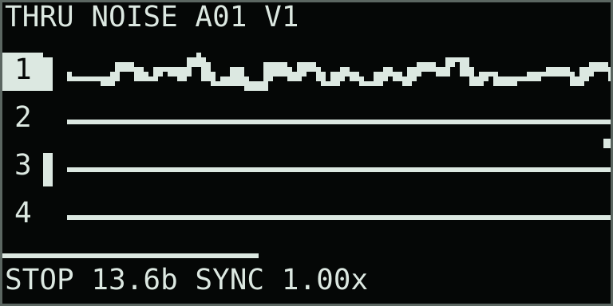
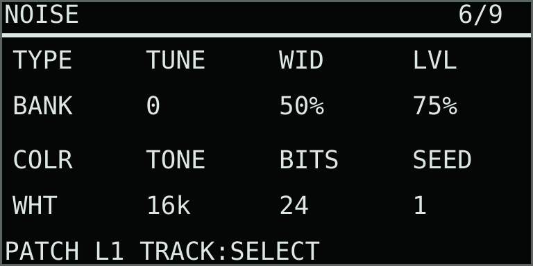
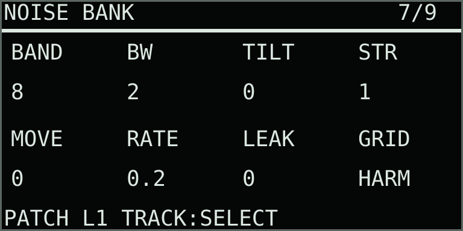
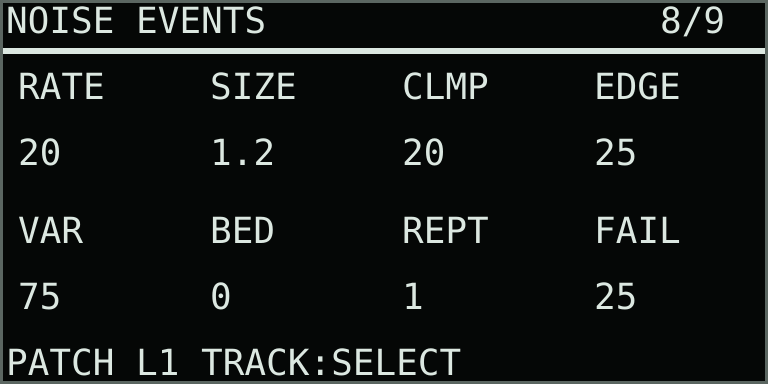
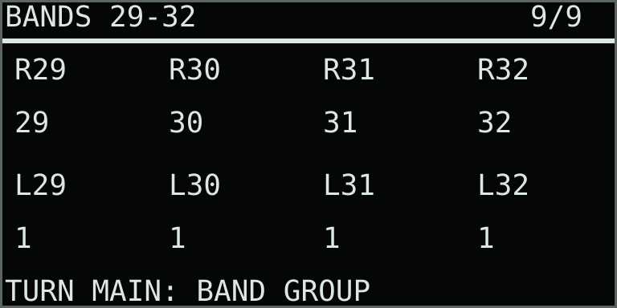

Playback engine 19 of 22
NOISE
Play tuned noise bands, dust, crackles, static, clicks, chopped noise and data textures from the keys. Each Track selects one of four patches; stack scanning blends them.
Play and edit
Choose NOISE on ENGINE: click the main encoder, turn to NOISE, then click to confirm. Track buttons select the patch to edit. The waveform view shows live scopes. Keyboard notes tune the band centers in BANK; in event types they shift the tone and shorten or lengthen each event. RATE remains events per second. Samples already loaded in the lanes remain available to sample engines.

POS, FLD, SPD, JOIN, PADS, VARI and trig POS are unavailable. Stack scanning still blends patches in scanning layouts. Sequence mode uses its assigned patch and normal trig duration. The Amp Envelope shapes each held note.
Parameter pages
Knobs 1–4 are the top row; 5–8 are the bottom row. Squares mark controls that do not affect the selected TYPE.
NOISE

| Knob | Display | Range | What it controls |
|---|---|---|---|
| 1 | TYPE | BANK / DUST / CRKL / STAT / CLIK / CUTS / DATA | Noise Type. Sound process: BANK is pitched filtered noise. DUST is short impulses; CRKL adds irregular crackle shapes; STAT is continuous noise with rhythmic dips; CLIK creates bipolar pulses; CUTS makes noise bursts; DATA repeats small digital patterns. |
| 2 | TUNE | -48–48 st | Noise Transpose. Transpose the played note in semitones. |
| 3 | WID | 0–100 % | Noise Stereo Width. Stereo width. Zero gives mono; higher values spread bands and events. |
| 4 | LVL | 0–100 % | Noise Level. Patch output level before the part mixer. |
| 5 | COLR | WHT / PINK / BRWN / BLUE | Noise Color. White, pink, brown or blue noise. Colors both filtered bands and event noise. |
| 6 | TONE | 20–20000 Hz | Noise Low Pass. Low-pass cutoff, shifted with the played note. Smooths high frequencies after generation. |
| 7 | BITS | 2–24 | Noise Resolution. Resolution from 24-bit clean output down to coarse quantization. |
| 8 | SEED | 0–65535 | Noise Seed. Seed for the noise and event stream. |
NOISE BANK

| Knob | Display | Range | What it controls |
|---|---|---|---|
| 1 | BAND | 1–32 | Band Count. Number of active bands. Fractional values fade in the next band. |
| 2 | BW | 0.1–48 st | Band Width. Width around each band center, in semitones. Narrow bands reveal pitch; wider bands become noisier. |
| 3 | TILT | -24–12 dB | Band Tilt. Level slope across the band ratios. Negative values emphasize lower bands. |
| 4 | STR | 0.25–4 | Band Stretch. Expand or contract the spacing between band centers. |
| 5 | MOVE | 0–24 st | Band Motion. Depth of slow band-center movement in semitones. |
| 6 | RATE | 0.01–20 Hz | Band Motion Rate. Speed of band-center movement in Hz. |
| 7 | LEAK | 0–100 % | Unfiltered Noise. Amount of noise outside the tuned bands. |
| 8 | GRID | HARM / ODD / METL / CUST | Band Grid. Harmonic, odd or metallic band spacing, or CUST for individual ratios. Editing a band changes GRID to CUST while retaining the current spacing. |
NOISE EVENTS

| Knob | Display | Range | What it controls |
|---|---|---|---|
| 1 | RATE | 0.1–2000 Hz | Event Rate. Average event arrivals per second. Each held voice runs its own stream. |
| 2 | SIZE | 0.02–500 ms | Event Size. Event length in milliseconds at the reference pitch. Higher notes shorten events; lower notes lengthen them. Edits affect new events. |
| 3 | CLMP | 0–100 % | Event Clustering. Group events into alternating busy and quiet periods. |
| 4 | EDGE | 0–100 % | Event Edge. Edge smoothing within each event. Higher values soften the attack and ending. |
| 5 | VAR | 0–100 % | Event Variation. Variation of event lengths and strengths. |
| 6 | BED | 0–100 % | Noise Bed. Continuous noise underneath the events. Unavailable in STAT, which already supplies the continuous noise. |
| 7 | REPT | 1–16 | Event Repeats. Number of repeats within each event. |
| 8 | FAIL | 0–100 % | Data Variation. Variation between repeated DATA patterns. Available only in DATA. |
NOISE BANDS

Turn the main encoder on this page to choose a group of four bands, from 1–4 through 29–32. The top four knobs set their center ratios (1–64); the bottom four set signed levels (−1 to +1). Zero silences a band, and a negative level reverses its polarity. All 32 band settings belong to the patch. Editing a component selects CUST, preserving the previous grid’s other ratios.
Clips, modulation and saved recipes
Clips and projects store all four patches, including the full band grids. Knob gestures retain their part and patch identity; Sequence sound locks use the same controls. LFOs offer curated sound controls for the active type.
To reuse an older Noise Bank or Dust sample recipe, open its saved WAV through Process’s recipe action. Its settings load into the selected realtime NOISE patch. Custom band ratios and levels are retained. Offline file envelopes and composition curves remain with the original recipe. Existing WAV audio is unchanged.
Band synthesis and dense overlapping events have different processing costs. Use the timing report when testing full chords with substantial effects.